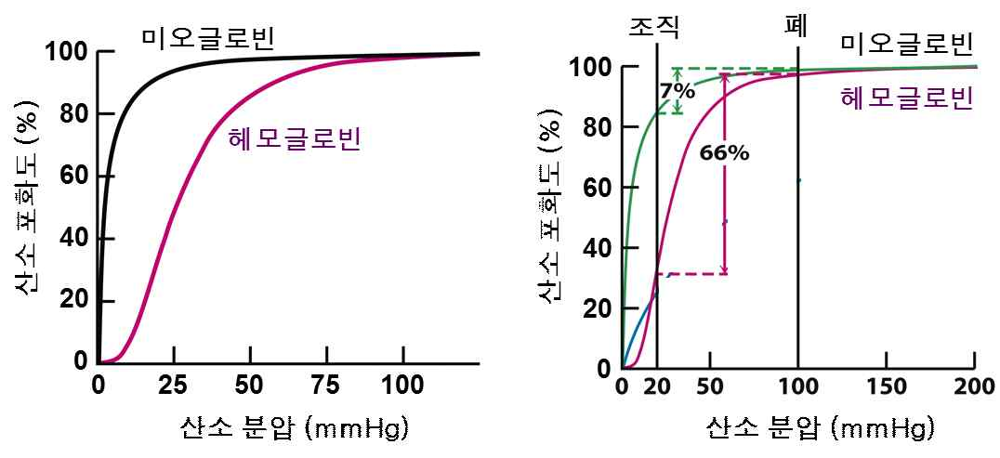

해설 1
산소 분압이 높은 폐와 산소 분압이 낮은 조직에서 헤모글로빈의 산소 포화도 차이가 미오글로빈보다 훨씬 크다. 따라서 폐에서 산소와 결합한 헤모글로빈은 조직에 많은 양의 산소를 전달할 수 있다.

헤모글로빈의 경우 미오글로빈과 달리 4개의 글로빈 단백질로 이루어져 첫 번째 글로빈에 산소가 결합하면 두 번째 이후 글로빈의 산소 결합력이 커지게 되어 S형태의 곡선이 나타난다.
산소 분압이 높은 폐와 산소 분압이 낮은 조직에서 헤모글로빈의 산소 포화도 차이가 미오글로빈보다 훨씬 크다. 따라서 폐에서 산소와 결합한 헤모글로빈은 조직에 많은 양의 산소를 전달할 수 있다.
헤모글로빈의 경우 미오글로빈과 달리 4개의 글로빈 단백질로 이루어져 첫 번째 글로빈에 산소가 결합하면 두 번째 이후 글로빈의 산소 결합력이 커지게 되어 S형태의 곡선이 나타난다.